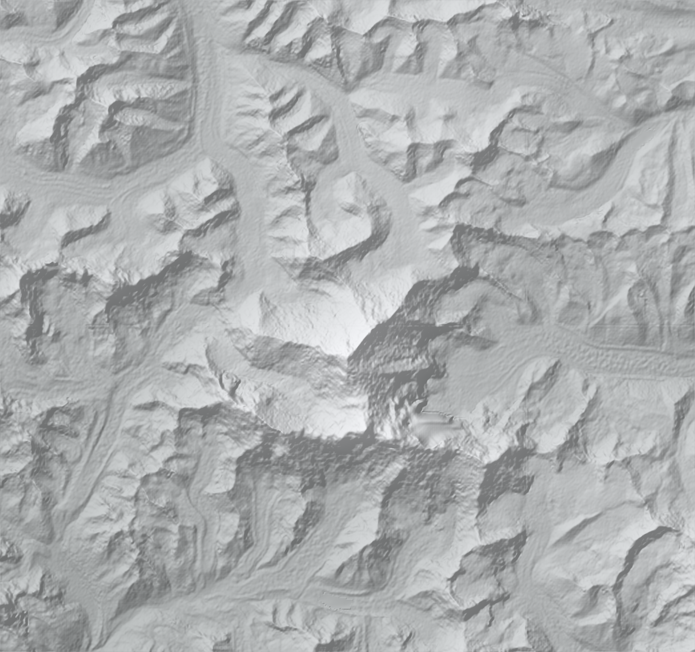
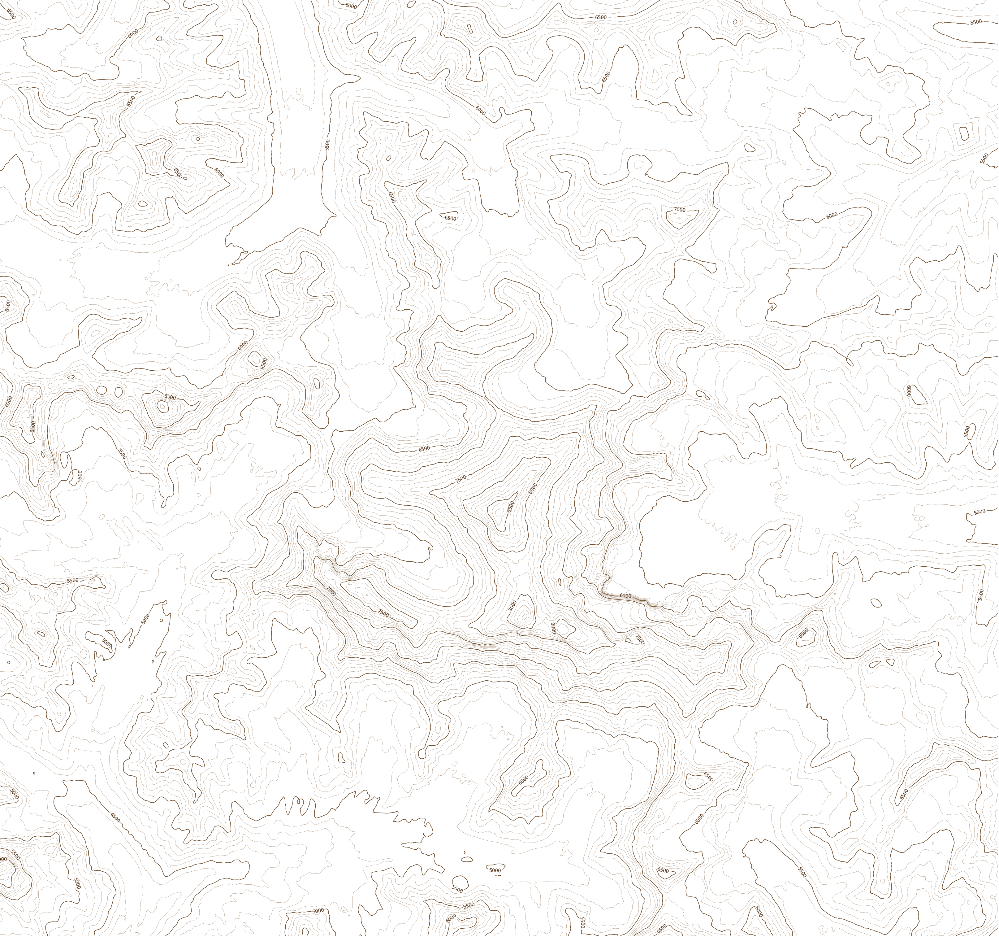

GeoID Initiative
ASCENT
Everest · 27.9894° N, 86.9254° E · 8,848.86 m
The mountain you are about to walk up is the real one. The ground is Esri's
satellite imagery streamed to half a metre a pixel, draped over an elevation
model read tile by tile out of the same web services a GIS uses. The route
was not drawn by hand — it was found by asking that elevation model for the
least-effort line from Base Camp to the summit, and it came back with the
South Col route.
Above 8,000 metres the air holds a third of the oxygen it does at the sea.
Nothing acclimatises to that. Everything else here follows from it.
Choose your starting point


Contacting the tile services